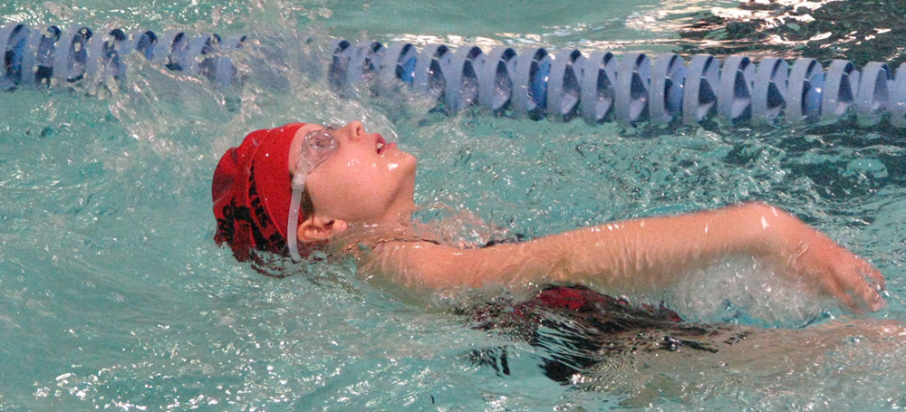
- State the common phases of matter.
- Explain the physical characteristics of solids, liquids, and gases.
- Describe the arrangement of atoms in solids, liquids, and gases.
Matter most commonly exists as a solid, liquid, or gas; these states are known as the three commonphases of matter. Solids have a definite shape and a specific volume, liquids have a definite volume but their shape changes depending on the container in which they are held, and gases have neither a definite shape nor a specific volume as their molecules move to fill the container in which they are held (Figure . Liquids and gases are considered to be fluids because they yield to shearing forces, whereas solids resist them. Note that the extent to which fluids yield to shearing forces (and hence flow easily and quickly) depends on a quantity called the viscosity which is discussed in detail inViscosity and Laminar Flow; Poiseuille’s Law. We can understand the phases of matter and what constitutes a fluid by considering the forces between atoms that make up matter in the three phases.
![This figure has three parts. Part a shows a solid, and the atoms in the solid are shown as small red spheres held together in a grid. Part b shows a liquid in a short cylindrical container, and the atoms in the liquid are represented by small red spheres that can move past one another. The movement of the atoms is represented by arrows. Part c shows a cylinder that is labeled to indicate that it contains oxygen gas. The atoms in the gas are represented by small red spheres that move around. Their motion is indicated by arrows./](images/ch11/fig11-2-this-figure-has-three-parts-part-a-shows.jpg)
Atoms insolidsare in close contact, with forces between them that allow the atoms to vibrate but not to change positions with neighboring atoms. (These forces can be thought of as springs that can be stretched or compressed, but not easily broken.) Thus a solidresistsall types of stress. A solid cannot be easily deformed because the atoms that make up the solid are not able to move about freely. Solids also resist compression, because their atoms form part of a lattice structure in which the atoms are a relatively fixed distance apart. Under compression, the atoms would be forced into one another. Most of the examples we have studied so far have involved solid objects which deform very little when stressed.
Submicroscopic Explanation of Solids and Liquids
Atomic and molecular characteristics explain and underlie the macroscopic characteristics of solids and fluids. This submicroscopic explanation is one theme of this text and is highlighted inConservation of Momentum. See, for example, microscopic description of collisions and momentum or microscopic description of pressure in a gas. This present section is devoted entirely to the submicroscopic explanation of solids and liquids.
Atoms ingasesare separated by distances that are large compared with the size of the atoms. The forces between gas atoms are therefore very weak, except when the atoms collide with one another. Gases thus not only flow (and are therefore considered to be fluids) but they are relatively easy to compress because there is much space and little force between atoms. When placed in an open container gases, unlike liquids, will escape. The major distinction is that gases are easily compressed, whereas liquids are not. We shall generally refer to both gases and liquids simply asfluids, and make a distinction between them only when they behave differently.
PhET Explorations: States of Matter - Basics
Heat, cool, and compress atoms and molecules and watch as they change between solid, liquid, and gas phases.
📖 OpenStax College Physics, Section 11.1. openstax.org · CC BY 4.0
- Define density.
- Calculate the mass of a reservoir from its density.
- Compare and contrast the densities of various substances.
Which weighs more, a ton of feathers or a ton of bricks? This old riddle plays with the distinction between mass and density. A ton is a ton, of course; but bricks have much greater density than feathers, and so we are tempted to think of them as heavier (Figure .
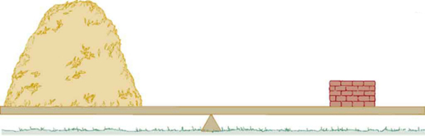
Density, as you will see, is an important characteristic of substances. It is crucial, for example, in determining whether an object sinks or floats in a fluid.
Density is mass per unit volume.
where the Greek letter \(\rho\) (rho) is the symbol for density, \(m\) is the mass, and \(V\) is the volume occupied by the substance.
In the riddle regarding the feathers and bricks, the masses are the same, but the volume occupied by the feathers is much greater, since their density is much lower. The SI unit of density is \(kg/m^3\), representative values are given in Table . The metric system was originally devised so that water would have a density of \(1 \, g/cm^3\), equivalent to \(10^3 \, kg/m^3\). Thus the basic mass unit, the kilogram, was first devised to be the mass of 1000 mL of water, which has a volume of \(1000 \, cm^3\).
| Substance | \(\rho(10^3\frac{kg}{m^3} \, or \, \frac{g}{mL})\) | Substance | \(\rho(10^3\frac{kg}{m^3} \, or \, \frac{g}{mL})\) | Substance | \(\rho(10^3\frac{kg}{m^3} \, or \, \frac{g}{mL})\) |
|---|---|---|---|---|---|
| Solids | Liquids | Gases | |||
| Aluminum | 2.7 | Water (4ºC) | 1.000 | Air | \(1.29 \times 10^{-3}\) |
| Brass | 8.44 | Blood | 1.05 | Carbon dioxide | \(1.98 \times 10^{-3}\) |
| Copper (average) | 8.8 | Sea water | 1.025 | Carbon monoxide | \(1.25 \times 10^{-3}\) |
| Gold | 19.32 | Mercury | 13.6 | Hydrogen | \(0.090 \times 10^{-3}\) |
| Iron or steel | 7.8 | Ethyl alcohol | 0.79 | Helium | \(0.18 \times 10^{-3}\) |
| Lead | 11.3 | Petrol | 0.68 | Methane | \(0.72 \times 10^{-3}\) |
| Polystyrene | 0.10 | Glycerin | 1.26 | Nitrogen | \(1.25 \times 10^{-3}\) |
| Tungsten | 19.30 | Olive oil | 0.92 | Nitrous oxide | \(1.98 \times 10^{-3}\) |
| Uranium | 18.70 | Oxygen | \(1.43 \times 10^{-3}\) | ||
| Concrete | 2.30–3.0 | Steam \(100^o\) | \(0.60 \times 10^{-3}\) | ||
| Cork | 0.24 | ||||
| Glass, common (average) | 2.6 | ||||
| Granite | 2.7 | ||||
| Earth’s crust | 3.3 | ||||
| Wood | 0.3–0.9 | ||||
| Ice (0°C) | 0.917 | ||||
| Bone | 1.7–2.0 |
As you can see by examining Table , the density of an object may help identify its composition. The density of gold, for example, is about 2.5 times the density of iron, which is about 2.5 times the density of aluminum. Density also reveals something about the phase of the matter and its substructure. Notice that the densities of liquids and solids are roughly comparable, consistent with the fact that their atoms are in close contact. The densities of gases are much less than those of liquids and solids, because the atoms in gases are separated by large amounts of empty space.
TAKE-HOME EXPERIMENT SUGAR AND SALT
A pile of sugar and a pile of salt look pretty similar, but which weighs more? If the volumes of both piles are the same, any difference in mass is due to their different densities (including the air space between crystals). Which do you think has the greater density? What values did you find? What method did you use to determine these values?
A reservoir has a surface area of \(50 \, km^2\) and an average depth of 40.0 m. What mass of water is held behind the dam? (See Figure for a view of a large reservoir—the Three Gorges Dam site on the Yangtze River in central China.)
We can calculate the volume \(V\) of the reservoir from its dimensions, and find the density of water \(\rho\) in Table . Then the mass \(m\) can be found from the definition of density (Equation \ref{density}).
Solving Equation \ref{density} for \(m\) gives
The volume \(V\) of the reservoir is its surface area \(A\) times its average depth \(h\):
The density of water \(\rho\) from Table is \(1.000 \times 10^3 \, kg/m^3 \). Substituting \(V\) and \(\rho\) into the expression for mass gives
A large reservoir contains a very large mass of water. In this example, the weight of the water in the reservoir is \(mg = 1.96 \times 10^{13} \, N\), where \(g\) is the acceleration due to the Earth’s gravity (about \(9.80 \, m/s^2\)). It is reasonable to ask whether the dam must supply a force equal to this tremendous weight. The answer is no. As we shall see in the following sections, the force the dam must supply can be much smaller than the weight of the water it holds back.
📖 OpenStax College Physics, Section 11.2. openstax.org · CC BY 4.0
- Define pressure.
- Explain the relationship between pressure and force.
- Calculate force given pressure and area.
You have no doubt heard the wordpressurebeing used in relation to blood (high or low blood pressure) and in relation to the weather (high- and low-pressure weather systems). These are only two of many examples of pressures in fluids.
Pressure is defined as the force divided by the area perpendicular to the force over which the force is applied, or
where \(F\) is a force applied to an area \(A\) that is perpendicular to the force.
A given force can have a significantly different effect depending on the area over which the force is exerted, as shown in Figure Figure . The SI unit for pressure is thepascal, where
In addition to the pascal, there are many other units for pressure that are in common use. In meteorology, atmospheric pressure is often described in units of millibar (mb), where
Pounds per square inch \((lb/in^2 \, or \, psi)\) is still sometimes used as a measure of tire pressure, and millimeters of mercury (mm Hg) is still often used in the measurement of blood pressure. Pressure is defined for all states of matter but is particularly important when discussing fluids.
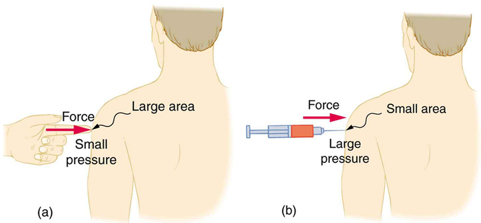
An astronaut is working outside the International Space Station where the atmospheric pressure is essentially zero. The pressure gauge on her air tank reads \(6.9 \times 10^6 \, Pa\). What force does the air inside the tank exert on the flat end of the cylindrical tank, a disk 0.150 m in diameter?
We can find the force exerted from the definition of pressure (Equation \red{pressure}) provided we can find the area \(A\) acted upon.
By rearranging the definition of pressure (Equation \red{pressure}) to solve for force, we see that
Here, the pressure \(P\) is given, as is the area of the end of the cylinder \(A\), given by \(A = \pi r^2\). Thus
Wow! No wonder the tank must be strong. Since we found \(F = PA\), we see that the force exerted by a pressure is directly proportional to the area acted upon as well as the pressure itself.
The force exerted on the end of the tank is perpendicular to its inside surface. This direction is because the force is exerted by a static or stationary fluid. We have already seen that fluids cannotwithstandshearing (sideways) forces; they cannotexertshearing forces, either. Fluid pressure has no direction, being a scalar quantity. The forces due to pressure have well-defined directions: they are always exerted perpendicular to any surface. (See the tire in Figure , for example.)
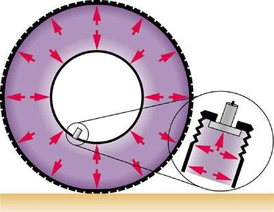
Finally, note that pressure is exerted on all surfaces. Swimmers, as well as the tire, feel pressure on all sides (Figure .
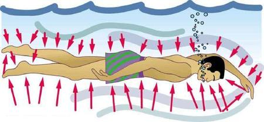
PHET EXPLORATIONS: GAS PROPERTIES
Pump gas molecules in thissimulationto a box and see what happens as you change the volume, add or remove heat, change gravity, and more. Measure the temperature and pressure, and discover how the properties of the gas vary in relation to each other.
📖 OpenStax College Physics, Section 11.3. openstax.org · CC BY 4.0
- Define pressure in terms of weight.
- Explain the variation of pressure with depth in a fluid.
- Calculate density given pressure and altitude.
If your ears have ever popped on a plane flight or ached during a deep dive in a swimming pool, you have experienced the effect of depth on pressure in a fluid. At the Earth’s surface, the air pressure exerted on you is a result of the weight of air above you. This pressure is reduced as you climb up in altitude and the weight of air above you decreases. Under water, the pressure exerted on you increases with increasing depth. In this case, the pressure being exerted upon you is a result of both the weight of water above youandthat of the atmosphere above you. You may notice an air pressure change on an elevator ride that transports you many stories, but you need only dive a meter or so below the surface of a pool to feel a pressure increase. The difference is that water is much denser than air, about 775 times as dense.
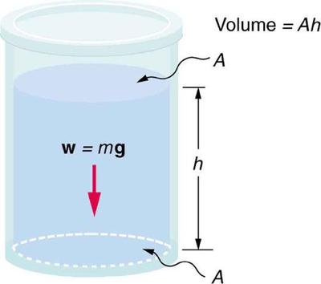
Consider the container in Figure . Its bottom supports the weight of the fluid in it. Let us calculate the pressure exerted on the bottom by the weight of the fluid. Thatpressureis the weight of the fluid \(mg\) divided by the area \(A\) supporting it (the area of the bottom of the container):
We can find the mass of the fluid from its volume and density:
The volume of the fluid \(V\) is related to the dimensions of the container. It is
where \(A\) is the cross-sectional area and \(h\) is the depth. Combining the last two equations gives \[m = \rho Ah.\]
If we enter this into the expression for pressure, we obtain \[P = \dfrac{(\rho Ah)g}{A}.\]
The area cancels, and rearranging the variables yields
This value is thepressure due to the weight of a fluid. Equation \ref{eq10} has general validity beyond the special conditions under which it is derived here. Even if the container were not there, the surrounding fluid would still exert this pressure, keeping the fluid static. Thus Equation \ref{eq10} represents the pressure due to the weight of any fluid ofaverage density \(\rho\) at any depth \(h\)below its surface. For liquids, which are nearly incompressible, this equation holds to great depths. For gases, which are quite compressible, one can apply this equation as long as the density changes are small over the depth considered. Example illustrates this situation.
In[link], we calculated the mass of water in a large reservoir. We will now consider the pressure and force acting on the dam retaining water (Figure . The dam is 500 m wide, and the water is 80.0 m deep at the dam.
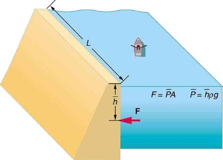
The average pressure \(\overline{P}\) due to the weight of the water is the pressure at the average depth \(\overline{h}\) of 40.0 m, since pressure increases linearly with depth.
The average pressure due to the weight of a fluid (Equation \ref{eq10}) is
Entering the density of water from[link]and taking \(\overline{h}\) to be the average depth of 40.0 m, we obtain
The force exerted on the dam by the water is the average pressure times the area of contact:
We have already found the value for \(\overline{P}\). The area of the dam is
Although this force seems large, it is small compared with the \(1.96 \times 10^{13} \, N\) weight of the water in the reservoir—in fact, it is only \(0.0800 \, \% \) of the weight. Note that the pressure found in part (a) is completely independent of the width and length of the lake—it depends only on its average depth at the dam. Thus the force depends only on the water’s average depth and the dimensions of the dam,noton the horizontal extent of the reservoir. In the diagram, the thickness of the dam increases with depth to balance the increasing force due to the increasing pressure.epth to balance the increasing force due to the increasing pressure.
Atmospheric pressureis another example of pressure due to the weight of a fluid, in this case due to the weight ofairabove a given height. The atmospheric pressure at the Earth’s surface varies a little due to the large-scale flow of the atmosphere induced by the Earth’s rotation (this creates weather “highs” and “lows”). However, the average pressure at sea level is given by thestandard atmospheric pressure \(P_{atm}\),measured to be
This relationship means that, on average, at sea level, a column of air above \(1.00 \, m^2 \) of the Earth’s surface has a weight of \(1.01 \times 10^5 \, N,\) equivalent to 1 atm (Figure .
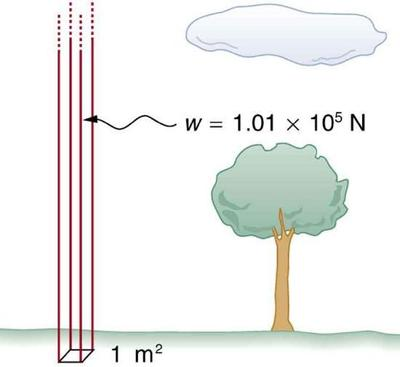
Calculate the average density of the atmosphere, given that it extends to an altitude of 120 km. Compare this density with that of air listed in[link].
If we solve \(P = h\rho g \) for density, we see that
We then take \(P\) to be atmospheric pressure, \(h\) is given, and \(g\) is known, and so we can use this to calculate \(\overline{\rho}\).
Entering known values into the expression for \(\overline{\rho}\) yields
This result is the average density of air between the Earth’s surface and the top of the Earth’s atmosphere, which essentially ends at 120 km. The density of air at sea level is given in[link]as \(1.29 \, kg/m^3 \) - about 15 times its average value. Because air is so compressible, its density has its highest value near the Earth’s surface and declines rapidly with altitude.
Calculate the depth below the surface of water at which the pressure due to the weight of the water equals 1.00 atm.
We begin by solving the equation \(P = h\rho g\) for depth \(h\):
Then we take \(P\) to be 1.00 atm and \(\rho \)
to be the density of the water that creates the pressure.
Entering the known values into the expression for \(h\) gives
Just 10.3 m of water creates the same pressure as 120 km of air. Since water is nearly incompressible, we can neglect any change in its density over this depth.
What do you suppose is thetotalpressure at a depth of 10.3 m in a swimming pool? Does the atmospheric pressure on the water’s surface affect the pressure below? The answer is yes. This seems only logical, since both the water’s weight and the atmosphere’s weight must be supported. So thetotalpressure at a depth of 10.3 m is 2 atm—half from the water above and half from the air above. We shall see inPascal’s Principlethat fluid pressures always add in this way.
📖 OpenStax College Physics, Section 11.4. openstax.org · CC BY 4.0
- Define pressure.
- State Pascal’s principle.
- Understand applications of Pascal’s principle.
- Derive relationships between forces in a hydraulic system.
Pressureis defined as force per unit area. Can pressure be increased in a fluid by pushing directly on the fluid? Yes, but it is much easier if the fluid is enclosed. The heart, for example, increases blood pressure by pushing directly on the blood in an enclosed system (valves closed in a chamber). If you try to push on a fluid in an open system, such as a river, the fluid flows away. An enclosed fluid cannot flow away, and so pressure is more easily increased by an applied force.
What happens to a pressure in an enclosed fluid? Since atoms in a fluid are free to move about, they transmit the pressure to all parts of the fluid and to the walls of the container. Remarkably, the pressure is transmittedundiminished. This phenomenon is calledPascal’s principle, because it was first clearly stated by the French philosopher and scientist Blaise Pascal (1623–1662): A change in pressure applied to an enclosed fluid is transmitted undiminished to all portions of the fluid and to the walls of its container.
Definition: Pascal’s Principle
A change in pressure applied to an enclosed fluid is transmitted undiminished to all portions of the fluid and to the walls of its container.
Pascal’s principle, an experimentally verified fact, is what makes pressure so important in fluids. Since a change in pressure is transmitted undiminished in an enclosed fluid, we often know more about pressure than other physical quantities in fluids. Moreover, Pascal’s principle implies thatthe total pressure in a fluid is the sum of the pressures from different sources. We shall find this fact—that pressures add—very useful.
Blaise Pascal had an interesting life in that he was home-schooled by his father who removed all of the mathematics textbooks from his house and forbade him to study mathematics until the age of 15. This, of course, raised the boy’s curiosity, and by the age of 12, he started to teach himself geometry. Despite this early deprivation, Pascal went on to make major contributions in the mathematical fields of probability theory, number theory, and geometry. He is also well known for being the inventor of the first mechanical digital calculator, in addition to his contributions in the field of fluid statics.
One of the most important technological applications of Pascal’s principle is found in ahydraulic system, which is an enclosed fluid system used to exert forces. The most common hydraulic systems are those that operate car brakes. Let us first consider the simple hydraulic system shown in Figure .
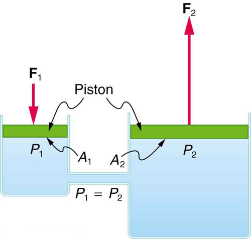
We can derive a relationship between the forces in the simple hydraulic system shown in Figure by applying Pascal’s principle. Note first that the two pistons in the system are at the same height, and so there will be no difference in pressure due to a difference in depth. Now the pressure due to \(F_1\) acting on area \(A_1\) is simply \(P_1 = \frac{F_1}{A_1}\), as defined by \(P = \frac{F}{A}\). According to Pascal’s principle, this pressure is transmitted undiminished throughout the fluid and to all walls of the container. Thus, a pressure \(P_2\) is felt at the other piston that is equal to \(P_1\). That is
But since \(P_2 - \frac{F_2}{A_2}\), we see that
This equation relates the ratios of force to area in any hydraulic system, providing the pistons are at the same vertical height and that friction in the system is negligible. Hydraulic systems can increase or decrease the force applied to them. To make the force larger, the pressure is applied to a larger area. For example, if a 100-N force is applied to the left cylinder in Figure and the right one has an area five times greater, then the force out is 500 N. Hydraulic systems are analogous to simple levers, but they have the advantage that pressure can be sent through tortuously curved lines to several places at once.
Consider the automobile hydraulic system shown in Figure .
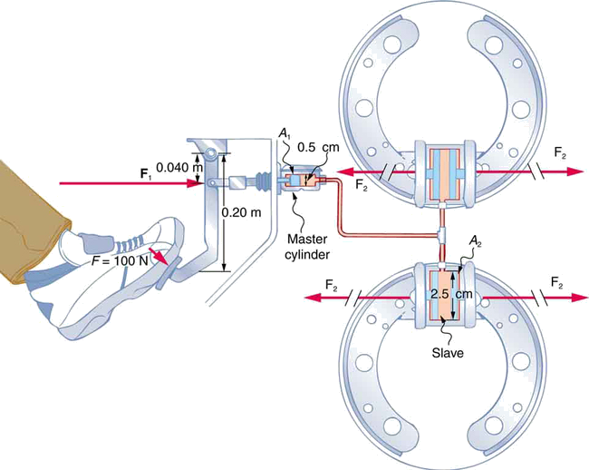
A force of 100 N is applied to the brake pedal, which acts on the cylinder—called the master—through a lever. A force of 500 N is exerted on the master cylinder. (The reader can verify that the force is 500 N using techniques of statics fromApplications of Statics, Including Problem-Solving Strategies.) Pressure created in the master cylinder is transmitted to four so-called slave cylinders. The master cylinder has a diameter of 0.500 cm, and each slave cylinder has a diameter of 2.50 cm. Calculate the force \(F_2\) created at each of the slave cylinders.
We are given the force \(F_1\) that is applied to the master cylinder. The cross-sectional areas \(A_1\) and \(A_2\) can be calculated from their given diameters. Then Equation \ref{eq20} can be used to find the force \(F_2\). Manipulate this algebraically to get \(F_2\)
on one side and substitute known values:
Pascal’s principle applied to hydraulic systems is given by Equation \ref{eq20}:
This value is the force exerted by each of the four slave cylinders. Note that we can add as many slave cylinders as we wish. If each has a 2.50-cm diameter, each will exert \(1.25 \times 10^4 \, N.\)
A simple hydraulic system, such as a simple machine, can increase force but cannot do more work than done on it. Work is force times distance moved, and the slave cylinder moves through a smaller distance than the master cylinder. Furthermore, the more slaves added, the smaller the distance each moves. Many hydraulic systems—such as power brakes and those in bulldozers—have a motorized pump that actually does most of the work in the system. The movement of the legs of a spider is achieved partly by hydraulics. Using hydraulics, a jumping spider can create a force that makes it capable of jumping 25 times its length!
Definition: Conservation of Energy
Conservation of energy applied to a hydraulic system tells us that the systemcannotdo more work than is done on it. Work transfers energy, and so the work output cannot exceed the work input. Power brakes and other similar hydraulic systems use pumps to supply extra energy when needed.
📖 OpenStax College Physics, Section 11.5. openstax.org · CC BY 4.0
- Define gauge pressure and absolute pressure.
- Understand the working of aneroid and open-tube barometers.
If you limp into a gas station with a nearly flat tire, you will notice the tire gauge on the airline reads nearly zero when you begin to fill it. In fact, if there were a gaping hole in your tire, the gauge would read zero, even though atmospheric pressure exists in the tire. Why does the gauge read zero? There is no mystery here. Tire gauges are simply designed to read zero at atmospheric pressure and positive when pressure is greater than atmospheric.
Similarly, atmospheric pressure adds to blood pressure in every part of the circulatory system. (As noted inPascal’s Principle, the total pressure in a fluid is the sum of the pressures from different sources—here, the heart and the atmosphere.) But atmospheric pressure has no net effect on blood flow since it adds to the pressure coming out of the heart and going back into it, too. What is important is how muchgreaterblood pressure is than atmospheric pressure. Blood pressure measurements, like tire pressures, are thus made relative to atmospheric pressure.
In brief, it is very common for pressure gauges to ignore atmospheric pressure—that is, to read zero at atmospheric pressure. We therefore definegauge pressureto be the pressure relative to atmospheric pressure. Gauge pressure is positive for pressures above atmospheric pressure, and negative for pressures below it.
Definition: Gauge Pressure
Gauge pressure is the pressure relative to atmospheric pressure. Gauge pressure is positive for pressures above atmospheric pressure, and negative for pressures below it.
In fact, atmospheric pressure does add to the pressure in any fluid not enclosed in a rigid container. This happens because of Pascal’s principle. The total pressure, orabsolute pressure, is thus the sum of gauge pressure and atmospheric pressure:
where \(P_{abs}\) is absolute pressure, \(P_g\) is gauge pressure, and \(P_{atm} \) is atmospheric pressure. For example, if your tire gauge reads 34 psi (pounds per square inch), then the absolute pressure is 34 psi plus 14.7 psi (\(P_{atm}\) in psi), or 48.7 psi (equivalent to 336 kPa).
Definition: Absolute Pressure
Absolute pressure is the sum of gauge pressure and atmospheric pressure.
For reasons we will explore later, in most cases the absolute pressure in fluids cannot be negative. Fluids push rather than pull, so the smallest absolute pressure is zero. (A negative absolute pressure is a pull.) Thus the smallest possible gauge pressure is \(P_g = -P_{atm} \) (this makes \(P_{abs}|) zero).
There is no theoretical limit to how large a gauge pressure can be.
There are a host of devices for measuring pressure, ranging from tire gauges to blood pressure cuffs. Pascal’s principle is of major importance in these devices. The undiminished transmission of pressure through a fluid allows precise remote sensing of pressures. Remote sensing is often more convenient than putting a measuring device into a system, such as a person’s artery.
Figureshows one of the many types of mechanical pressure gauges in use today. In all mechanical pressure gauges, pressure results in a force that is converted (or transduced) into some type of readout.
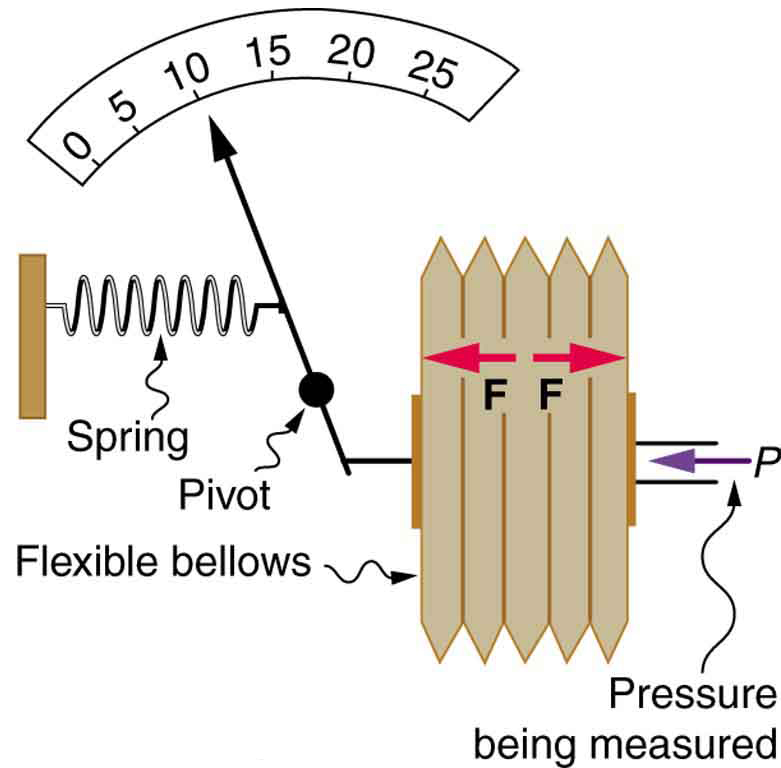
An entire class of gauges uses the property that pressure due to the weight of a fluid is given by \(P = h\rho g\).
Consider the U-shaped tube shown inFigure, for example. This simple tube is called amanometer. InFigure(a), both sides of the tube are open to the atmosphere. Atmospheric pressure therefore pushes down on each side equally so its effect cancels. If the fluid is deeper on one side, there is a greater pressure on the deeper side, and the fluid flows away from that side until the depths are equal.
Let us examine how a manometer is used to measure pressure. Suppose one side of the U-tube is connected to some source of pressure \(P_{abs}\) such as the toy balloon inFigure(b) or the vacuum-packed peanut jar shown inFigure(c). Pressure is transmitted undiminished to the manometer, and the fluid levels are no longer equal. InFigure(b), \(P_{abs}\) is greater than atmospheric pressure, whereas inFigure(c), \(P_{abs}\) is less than atmospheric pressure. In both cases, \(P_{abs}\) differs from atmospheric pressure by an amount \(h\rho g\), where \(\rho\) is the density of the fluid in the manometer. InFigure(b), \(P_{abs}\) can support a column of fluid of height \(h\), and so it must exert a pressure \(h\rho g\) greater than atmospheric pressure (the gauge pressure \(P_g\) is positive). InFigure(c), atmospheric pressure can support a column of fluid of height \(h\), and so \(P_{abs}\) is less than atmospheric pressure by an amount \(h\rho g\) (the gauge pressure \(P_g\) is negative). A manometer with one side open to the atmosphere is an ideal device for measuring gauge pressures. The gauge pressure is \(P_g = h\rho g\) and is found by measuring \(h\).
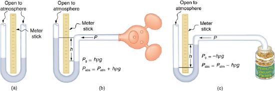
Mercury manometers are often used to measure arterial blood pressure. An inflatable cuff is placed on the upper arm as shown inFigure. By squeezing the bulb, the person making the measurement exerts pressure, which is transmitted undiminished to both the main artery in the arm and the manometer. When this applied pressure exceeds blood pressure, blood flow below the cuff is cut off. The person making the measurement then slowly lowers the applied pressure and listens for blood flow to resume. Blood pressure pulsates because of the pumping action of the heart, reaching a maximum, calledsystolic pressure, and a minimum, calleddiastolic pressure, with each heartbeat. Systolic pressure is measured by noting the value of \(h\) when blood flow first begins as cuff pressure is lowered. Diastolic pressure is measured by noting when blood flows without interruption. The typical blood pressure of a young adult raises the mercury to a height of 120 mm at systolic and 80 mm at diastolic. This is commonly quoted as 120 over 80, or 120/80. The first pressure is representative of the maximum output of the heart; the second is due to the elasticity of the arteries in maintaining the pressure between beats. The density of the mercury fluid in the manometer is 13.6 times greater than water, so the height of the fluid will be 1/13.6 of that in a water manometer. This reduced height can make measurements difficult, so mercury manometers are used to measure larger pressures, such as blood pressure. The density of mercury is such that \(1 \, mm \, Hg = 133 \, Pa\).
Definition: Systolic Pressure
Systolic Pressure is the maximum blood pressure.
Definition: Diastolic Pressure
Diastolic pressure is the minimum blood pressure.
Intravenous infusions are usually made with the help of the gravitational force. Assuming that the density of the fluid being administered is 1.00 g/ml, at what height should the IV bag be placed above the entry point so that the fluid just enters the vein if the blood pressure in the vein is 18 mm Hg above atmospheric pressure? Assume that the IV bag is collapsible.
For the fluid to just enter the vein, its pressure at entry must exceed the blood pressure in the vein (18 mm Hg above atmospheric pressure). We therefore need to find the height of fluid that corresponds to this gauge pressure.
We first need to convert the pressure into SI units. Since \(1.0 \, mm \, Hg = 133 \, Pa\),
The IV bag must be placed at 0.24 m above the entry point into the arm for the fluid to just enter the arm. Generally, IV bags are placed higher than this. You may have noticed that the bags used for blood collection are placed below the donor to allow blood to flow easily from the arm to the bag, which is the opposite direction of flow than required in the example presented here.
Abarometeris a device that measures atmospheric pressure. A mercury barometer is shown inFigure. This device measures atmospheric pressure, rather than gauge pressure, because there is a nearly pure vacuum above the mercury in the tube. The height of the mercury is such that \(h\rho g = P_{atm}\). When atmospheric pressure varies, the mercury rises or falls, giving important clues to weather forecasters. The barometer can also be used as an altimeter, since average atmospheric pressure varies with altitude. Mercury barometers and manometers are so common that units of mm Hg are often quoted for atmospheric pressure and blood pressures.Tablegives conversion factors for some of the more commonly used units of pressure.
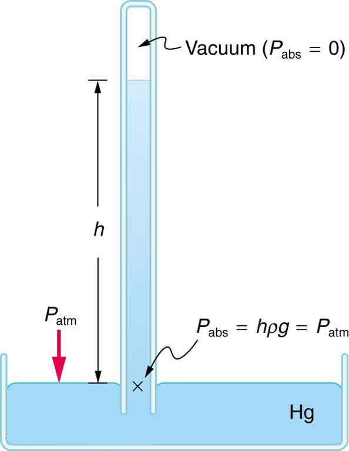
| Conversion to N/m2(Pa) | Conversion from atm |
|---|---|
| \(1.0 atm=1.013×10^5N/m^2\) | \(1.0 atm=1.013×10^5N/m^2\) |
| \(1.0dyne/cm^2=0.10N/m^2\) | \(1.0atm=1.013×10^6dyne/cm^2\) |
| \(1.0kg/cm^2=9.8×10^4N/m^2\) | \(1.0atm=1.013kg/cm^2\) |
| \(1.0lb/in.^2=6.90×10^3N/m^2\) | \(1.0atm=14.7lb/in.^2\) |
| \(1.0 mm Hg=133N/m^2\) | \(1.0atm=760 mm Hg\) |
| \(1.0 cm Hg=1.33×10^3N/m^2\) | \(1.0atm=76.0 cm Hg\) |
| \(1.0 cm water=98.1N/m^2\) | \(1.0atm=1.03×10^3cm water\) |
| \(1.0 bar=1.000×10^5N/m^2\) | \(1.0atm=1.013 bar\) |
| \(1.0 millibar=1.000×10^2N/m^2\) | \(1.0 atm=1013 millibar\) |
Conversion Factors for Various Pressure Units
📖 OpenStax College Physics, Section 11.6. openstax.org · CC BY 4.0
- Define buoyant force.
- State Archimedes’ principle.
- Understand why objects float or sink.
- Understand the relationship between density and Archimedes’ principle.
When you rise from lounging in a warm bath, your arms feel strangely heavy. This is because you no longer have the buoyant support of the water. Where does this buoyant force come from? Why is it that some things float and others do not? Do objects that sink get any support at all from the fluid? Is your body buoyed by the atmosphere, or are only helium balloons affected (Figure ?
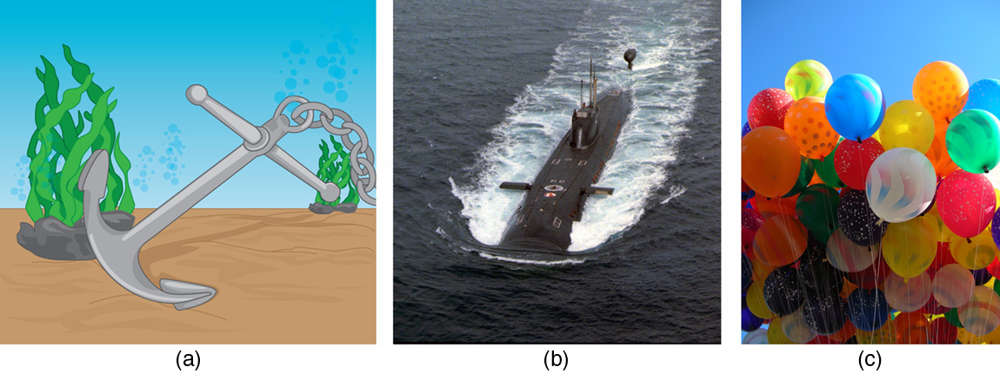
Answers to all these questions, and many others, are based on the fact that pressure increases with depth in a fluid. This means that the upward force on the bottom of an object in a fluid is greater than the downward force on the top of the object. There is a net upward, orbuoyant forceon any object in any fluid (Figure . If the buoyant force is greater than the object’s weight, the object will rise to the surface and float. If the buoyant force is less than the object’s weight, the object will sink. If the buoyant force equals the object’s weight, the object will remain suspended at that depth. The buoyant force is always present whether the object floats, sinks, or is suspended in a fluid.
Defintion: Buoyant Force
The buoyant force is the net upward force on any object in any fluid.
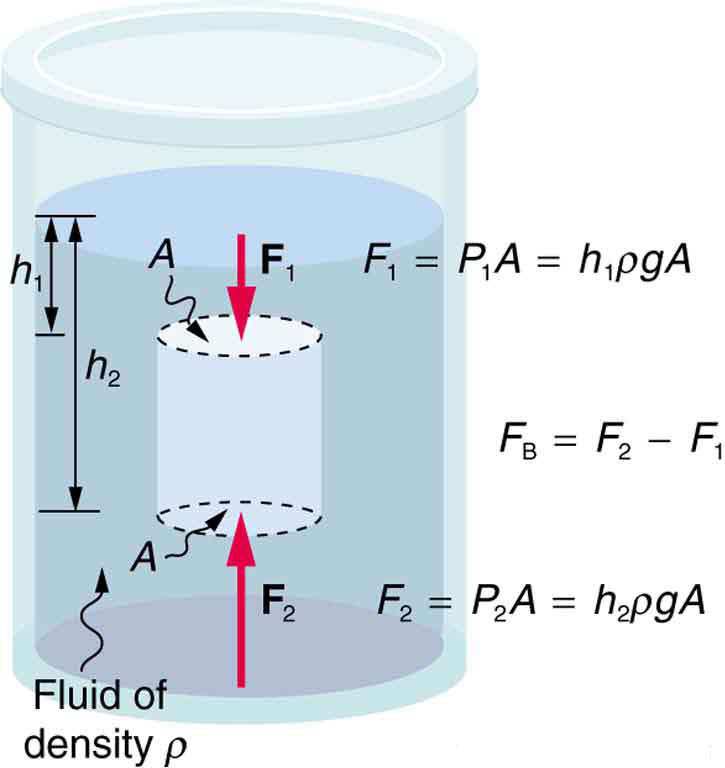
Just how great is this buoyant force? To answer this question, think about what happens when a submerged object is removed from a fluid, as in Figure .
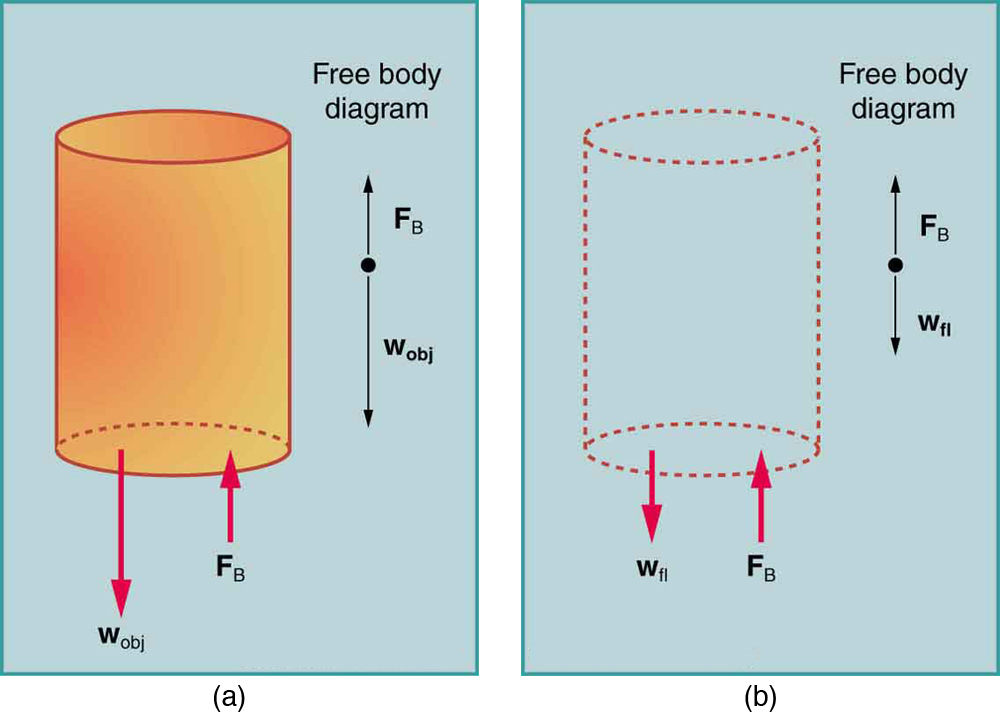
The space it occupied is filled by fluid having a weight \(w_{fl}\). This weight is supported by the surrounding fluid, and so the buoyant force must equal \(w_{fl}\), the weight of the fluid displaced by the object. It is a tribute to the genius of the Greek mathematician and inventor Archimedes (ca. 287–212 B.C.) that he stated this principle long before concepts of force were well established. Stated in words,Archimedes’ principleis as follows: The buoyant force on an object equals the weight of the fluid it displaces. In equation form, Archimedes’ principle is
where \(F_B\) is the buoyant force and \(w_{fl}\) is the weight of the fluid displaced by the object. Archimedes’ principle is valid in general, for any object in any fluid, whether partially or totally submerged.
Archimedes’ Principle
According to this principle the buoyant force on an object equals the weight of the fluid it displaces. In equation form, Archimedes’ principle is \[F_B = w_{fl},\] where \(F_B\) is the buoyant force and \(w_{fl}\) is the weight of the fluid displaced by the object.
Humm …High-tech body swimsuits were introduced in 2008 in preparation for the Beijing Olympics. One concern (and international rule) was that these suits should not provide any buoyancy advantage. How do you think that this rule could be verified?
Making Connections: Take-Home Investigation
The density of aluminum foil is 2.7 times the density of water. Take a piece of foil, roll it up into a ball and drop it into water. Does it sink? Why or why not? Can you make it sink?
Drop a lump of clay in water. It will sink. Then mold the lump of clay into the shape of a boat, and it will float. Because of its shape, the boat displaces more water than the lump and experiences a greater buoyant force. The same is true of steel ships.
To find the buoyant force, we must find the weight of water displaced. We can do this by using the densities of water and steel given in[link]. We note that, since the steel is completely submerged, its volume and the water’s volume are the same. Once we know the volume of water, we can find its mass and weight.
First, we use the definition of density \(\rho = \frac{m}{V}\) to find the steel’s volume, and then we substitute values for mass and density. This gives
Because the steel is completely submerged, this is also the volume of water displaced, \(V_W\). We can now find the mass of water displaced from the relationship between its volume and density, both of which are known. This gives
By Archimedes’ principle, the weight of water displaced is \(m_Wg\), so the buoyance force is
The steel’s weight is \(m_W g = 9.80 \times 10^7 \, N\),
which is much greater than the buoyant force, so the steel will remain submerged. Note that the buoyant force is rounded to two digits because the density of steel is given to only two digits.
Here we are given the maximum volume of water the steel boat can displace. The buoyant force is the weight of this volume of water.
The mass of water displaced is found from its relationship to density and volume, both of which are known. That is,
The maximum buoyant force is the weight of this much water, or
The maximum buoyant force is ten times the weight of the steel, meaning the ship can carry a load nine times its own weight without sinking.
Making Connections: Take-Home Investigation
Density plays a crucial role in Archimedes’ principle. The average density of an object is what ultimately determines whether it floats. If its average density is less than that of the surrounding fluid, it will float. This is because the fluid, having a higher density, contains more mass and hence more weight in the same volume. The buoyant force, which equals the weight of the fluid displaced, is thus greater than the weight of the object. Likewise, an object denser than the fluid will sink.
The extent to which a floating object is submerged depends on how the object’s density is related to that of the fluid. In Figure , for example, the unloaded ship has a lower density and less of it is submerged compared with the same ship loaded. We can derive a quantitative expression for the fraction submerged by considering density. The fraction submerged is the ratio of the volume submerged to the volume of the object, or
The volume submerged equals the volume of fluid displaced, which we call \(V_{fl}\). Now we can obtain the relationship between the densities by substituting \(\rho = \frac{m}{V}\) into the expression. This gives
where \(\overline{\rho}_{obj}\) is the average density of the object and \(\rho_{fl}\) is the density of the fluid. Since the object floats, its mass and that of the displaced fluid are equal, and so they cancel from the equation, leaving
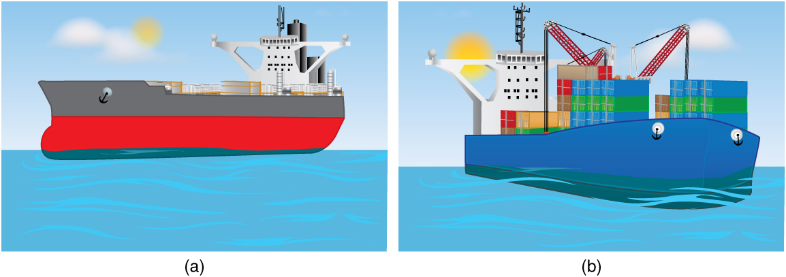
We use this last relationship to measure densities. This is done by measuring the fraction of a floating object that is submerged—for example, with a hydrometer. It is useful to define the ratio of the density of an object to a fluid (usually water) asspecific gravity:
\[specific \, gravity = \dfrac{\overline{\rho}}{\rho_W},\] where \(\overline{\rho}\) is the average density of the object or substance and \(\rho_W\) is the density of water at 4.00°C. Specific gravity is dimensionless, independent of whatever units are used for \(\rho\). If an object floats, its specific gravity is less than one. If it sinks, its specific gravity is greater than one. Moreover, the fraction of a floating object that is submerged equals its specific gravity. If an object’s specific gravity is exactly 1, then it will remain suspended in the fluid, neither sinking nor floating. Scuba divers try to obtain this state so that they can hover in the water. We measure the specific gravity of fluids, such as battery acid, radiator fluid, and urine, as an indicator of their condition. One device for measuring specific gravity is shown in Figure .
Definition: Specific Gravity
Specific gravity is the ratio of the density of an object to a fluid (usually water).
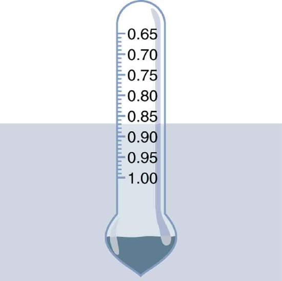
Suppose a 60.0-kg woman floats in freshwater with \(97.0\%\) of her volume submerged when her lungs are full of air. What is her average density?
We can find the woman’s density by solving the equation
for the density of the object. This yields
We know both the fraction submerged and the density of water, and so we can calculate the woman’s density.
Entering the known values into the expression for her density, we obtain
Her density is less than the fluid density. We expect this because she floats. Body density is one indicator of a person’s percent body fat, of interest in medical diagnostics and athletic training. (See Figure
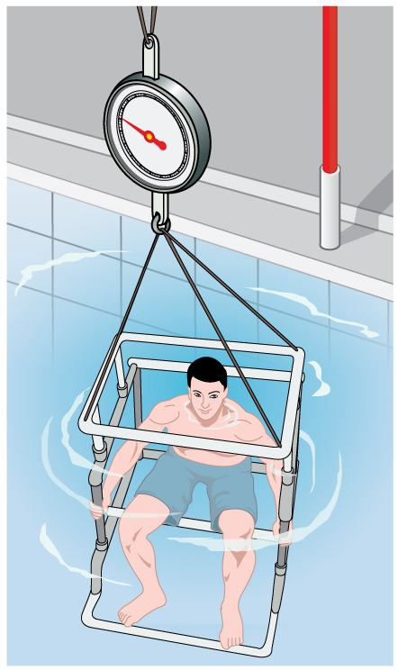
There are many obvious examples of lower-density objects or substances floating in higher-density fluids—oil on water, a hot-air balloon, a bit of cork in wine, an iceberg, and hot wax in a “lava lamp,” to name a few. Less obvious examples include lava rising in a volcano and mountain ranges floating on the higher-density crust and mantle beneath them. Even seemingly solid Earth has fluid characteristics.
One of the most common techniques for determining density is shown in Figure . An object, here a coin, is weighed in air and then weighed again while submerged in a liquid. The density of the coin, an indication of its authenticity, can be calculated if the fluid density is known. This same technique can also be used to determine the density of the fluid if the density of the coin is known. All of these calculations are based on Archimedes’ principle.
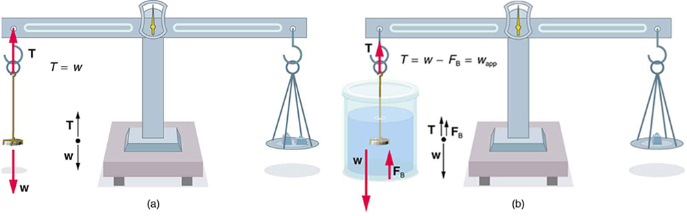
Archimedes’ principle states that the buoyant force on the object equals the weight of the fluid displaced. This, in turn, means that the objectappearsto weigh less when submerged; we call this measurement the object’sapparent weight. The object suffers anapparent weight lossequal to the weight of the fluid displaced. Alternatively, on balances that measure mass, the object suffers anapparent mass lossequal to the mass of fluid displaced. That is
\[apparent \, weight \, loss = weight \, of \, fluid \, displaced\] or
The next example illustrates the use of this technique.
The mass of an ancient Greek coin is determined in air to be 8.630 g. When the coin is submerged in water as shown in Figure , its apparent mass is 7.800 g. Calculate its density, given that water has a density of \(1.000 \, g/m^3\)
and that effects caused by the wire suspending the coin are negligible.
To calculate the coin’s density, we need its mass (which is given) and its volume. The volume of the coin equals the volume of water displaced. The volume of water displaced \(\rho = \frac{m}{V}\) for \(V\).
The volume of water is \(V_W = \frac{m_W}{\rho_W}\) where \(m_W\) is the mass of water displaced. As noted, the mass of the water displaced equals the apparent mass loss, which is \(m_W = 8.630 \, g - 7.800 \, g = 0.830 \, g\). Thus the volume of water is \(V_W = \frac{0.830 \, g}{1.000 \, g/cm^3} = 0.830 \, cm^3\). This is also the volume of the coin, since it is completely submerged. We can now find the density of the coin using the definition of density:
You can see from[link]that this density is very close to that of pure silver, appropriate for this type of ancient coin. Most modern counterfeits are not pure silver.
This brings us back to Archimedes’ principle and how it came into being. As the story goes, the king of Syracuse gave Archimedes the task of determining whether the royal crown maker was supplying a crown of pure gold. The purity of gold is difficult to determine by color (it can be diluted with other metals and still look as yellow as pure gold), and other analytical techniques had not yet been conceived. Even ancient peoples, however, realized that the density of gold was greater than that of any other then-known substance. Archimedes purportedly agonized over his task and had his inspiration one day while at the public baths, pondering the support the water gave his body. He came up with his now-famous principle, saw how to apply it to determine density, and ran naked down the streets of Syracuse crying “Eureka!” (Greek for “I have found it”). Similar behavior can be observed in contemporary physicists from time to time!
PhET Explorations: Buoyancy
When will objects float and when will they sink? Learn how buoyancy works with blocks. Arrows show the applied forces, and you can modify the properties of the blocks and the fluid.
📖 OpenStax College Physics, Section 11.7. openstax.org · CC BY 4.0
- Understand cohesive and adhesive forces.
- Define surface tension.
- Understand capillary action.
Children blow soap bubbles and play in the spray of a sprinkler on a hot summer day (Figure . An underwater spider keeps his air supply in a shiny bubble he carries wrapped around him. A technician draws blood into a small-diameter tube just by touching it to a drop on a pricked finger. A premature infant struggles to inflate her lungs. What is the common thread? All these activities are dominated by the attractive forces between atoms and molecules in liquids—both within a liquid and between the liquid and its surroundings.
Attractive forces between molecules of the same type are calledcohesive forces. Liquids can, for example, be held in open containers because cohesive forces hold the molecules together. Attractive forces between molecules of different types are calledadhesive forces. Such forces cause liquid drops to cling to window panes, for example. In this section we examine effects directly attributable to cohesive and adhesive forces in liquids.
Definition: Cohesive Forces
Attractive forces between molecules of the same type are called cohesive forces.
Definition: Adhesive Forces
Attractive forces between molecules of different types are called adhesive forces.
Cohesive forces between molecules cause the surface of a liquid to contract to the smallest possible surface area. This general effect is calledsurface tension. Molecules on the surface are pulled inward by cohesive forces, reducing the surface area. Molecules inside the liquid experience zero net force, since they have neighbors on all sides.
Definition: Surface Tension
Cohesive forces between molecules cause the surface of a liquid to contract to the smallest possible surface area. This general effect is called surface tension.
Forces between atoms and molecules underlie the macroscopic effect called surface tension. These attractive forces pull the molecules closer together and tend to minimize the surface area. This is another example of a submicroscopic explanation for a macroscopic phenomenon.
The model of a liquid surface acting like a stretched elastic sheet can effectively explain surface tension effects. For example, some insects can walk on water (as opposed to floating in it) as we would walk on a trampoline—they dent the surface as shown in Figure \(\PageIndex{2a}\). Figure \(\PageIndex{2b}\) shows another example, where a needle rests on a water surface. The iron needle cannot, and does not, float, because its density is greater than that of water. Rather, its weight is supported by forces in the stretched surface that try to make the surface smaller or flatter. If the needle were placed point down on the surface, its weight acting on a smaller area would break the surface, and it would sink.
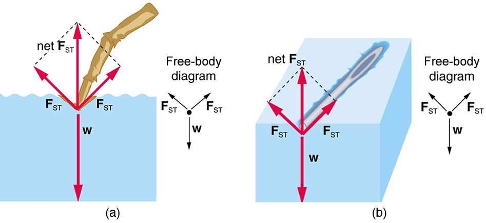
Surface tension is proportional to the strength of the cohesive force, which varies with the type of liquid. Surface tension \(\overline{\gamma}\) is defined to be the forceFper unit length \(L\) exerted by a stretched liquid membrane:
Table lists values of \(\overline{\gamma}\) for some liquids.
| Liquid | Surface tension γ(N/m) |
|---|---|
| Water at \(0^oC\) | 0.0756 |
| Water at \(20^oC\) | 0.0728 |
| Water at \(100^OC\) | 0.0589 |
| Soapy water (typical) | 0.0370 |
| Ethyl alcohol | 0.0223 |
| Glycerin | 0.0631 |
| Mercury | 0.465 |
| Olive Oil | 0.032 |
| Tissue fluids (typical) | 0.050 |
| Blood, whole at \(37^oC\) | 0.058 |
| Blood plasma at \(37^oC\) | 0.073 |
| Gold at \(1070^oC\) | 1.000 |
| Oxygen at \(-193^oC\) | 0.0157 |
| Helium at \(-269^oC\) | 0.00012 |
For the insect of Figure Figure \(\PageIndex{1a}\), its weight \(w\) is supported by the upward components of the surface tension force: \(w = \gamma L \sin \theta\), where \(L\) is the circumference of the insect’s foot in contact with the water. Figure shows one way to measure surface tension. The liquid film exerts a force on the movable wire in an attempt to reduce its surface area. The magnitude of this force depends on the surface tension of the liquid and can be measured accurately.
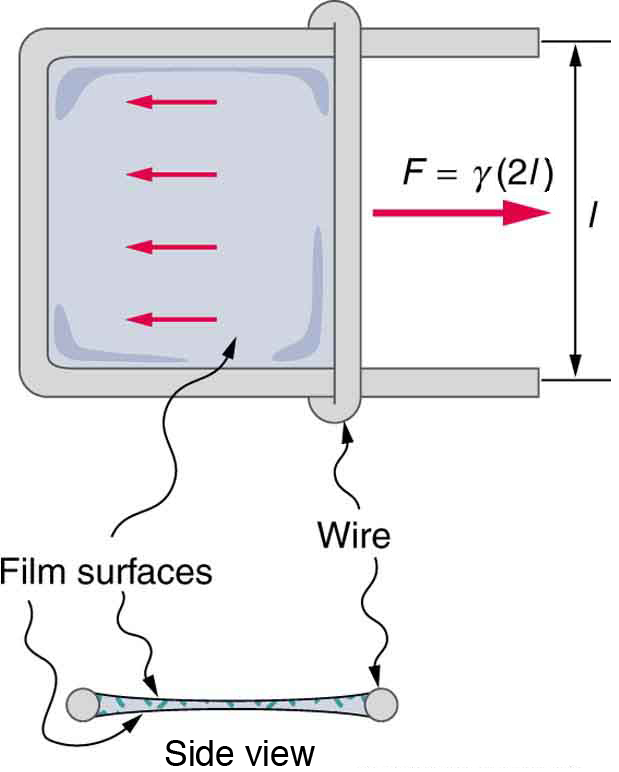
Surface tension is the reason why liquids form bubbles and droplets. The inward surface tension force causes bubbles to be approximately spherical and raises the pressure of the gas trapped inside relative to atmospheric pressure outside. It can be shown that the gauge pressure \(P \) inside a spherical bubble is given by
where \(r\) is the radius of the bubble. Thus the pressure inside a bubble is greatest when the bubble is the smallest. Another bit of evidence for this is illustrated in Figure . When air is allowed to flow between two balloons of unequal size, the smaller balloon tends to collapse, filling the larger balloon.
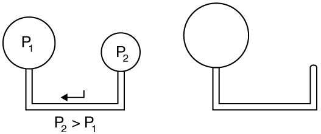
Calculate the gauge pressure inside a soap bubble \(2.00 \times 10^{-4} m\) in radius using the surface tension for soapy water inTable. Convert this pressure to mm Hg.
The radius is given and the surface tension can be found inTable, and so \(P\) can be found directly from the equation \(P = \frac{4\gamma}{r}\).
Substituding \(r\) and \(\gamma\) into this equation \(P = \frac{4\gamma}{r}\), we obtaiin
We use a conversion factor to get this into units of mm Hg:
Note that if a hole were to be made in the bubble, the air would be forced out, the bubble would decrease in radius, and the gauge pressure would reduce to zero, and the absolute pressure inside woulddecreaseto atmospheric pressure (760 mm Hg).
Our lungs contain hundreds of millions of mucus-lined sacs calledalveoli, which are very similar in size, and about 0.1 mm in diameter. (SeeFigure.) You can exhale without muscle action by allowing surface tension to contract these sacs. Medical patients whose breathing is aided by a positive pressure respirator have air blown into the lungs, but are generally allowed to exhale on their own. Even if there is paralysis, surface tension in the alveoli will expel air from the lungs. Since pressure increases as the radii of the alveoli decrease, an occasional deep cleansing breath is needed to fully reinflate the alveoli. Respirators are programmed to do this and we find it natural, as do our companion dogs and cats, to take a cleansing breath before settling into a nap.
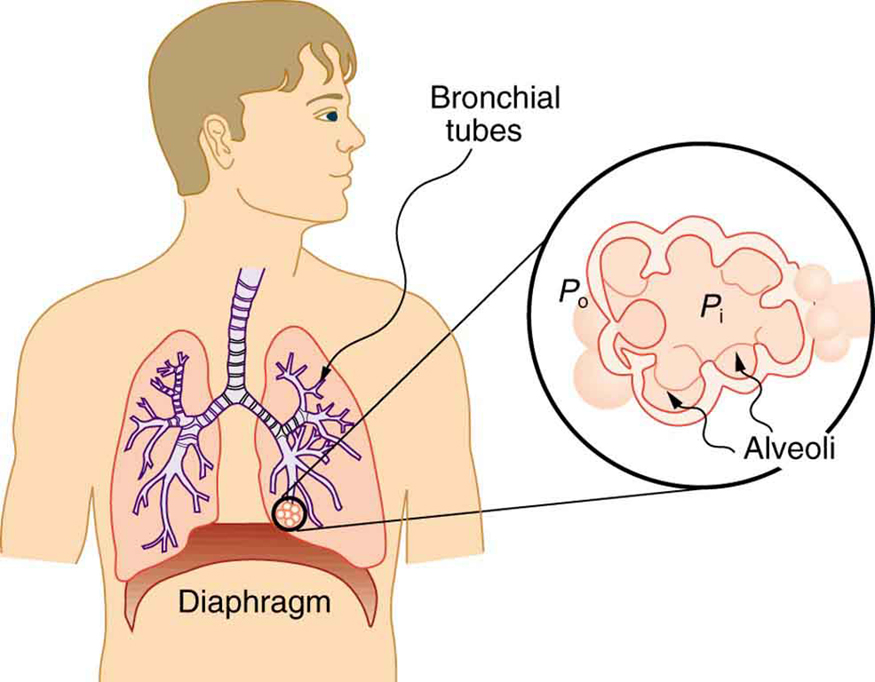
The tension in the walls of the alveoli results from the membrane tissue and a liquid on the walls of the alveoli containing a long lipoprotein that acts as a surfactant (a surface-tension reducing substance). The need for the surfactant results from the tendency of small alveoli to collapse and the air to fill into the larger alveoli making them even larger (as demonstrated inFigure). During inhalation, the lipoprotein molecules are pulled apart and the wall tension increases as the radius increases (increased surface tension). During exhalation, the molecules slide back together and the surface tension decreases, helping to prevent a collapse of the alveoli. The surfactant therefore serves to change the wall tension so that small alveoli don’t collapse and large alveoli are prevented from expanding too much. This tension change is a unique property of these surfactants, and is not shared by detergents (which simply lower surface tension). (SeeFigure.)
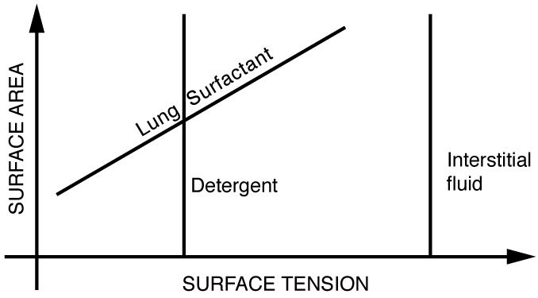
If water gets into the lungs, the surface tension is too great and you cannot inhale. This is a severe problem in resuscitating drowning victims. A similar problem occurs in newborn infants who are born without this surfactant—their lungs are very difficult to inflate. This condition is known ashyaline membrane diseaseand is a leading cause of death for infants, particularly in premature births. Some success has been achieved in treating hyaline membrane disease by spraying a surfactant into the infant’s breathing passages. Emphysema produces the opposite problem with alveoli. Alveolar walls of emphysema victims deteriorate, and the sacs combine to form larger sacs. Because pressure produced by surface tension decreases with increasing radius, these larger sacs produce smaller pressure, reducing the ability of emphysema victims to exhale. A common test for emphysema is to measure the pressure and volume of air that can be exhaled.
Making Connections: Take-Home Investigation
Why is it that water beads up on a waxed car but does not on bare paint? The answer is that the adhesive forces between water and wax are much smaller than those between water and paint. Competition between the forces of adhesion and cohesion are important in the macroscopic behavior of liquids. An important factor in studying the roles of these two forces is the angle \(\theta\) between the tangent to the liquid surface and the surface (Figure . Thecontact angle\(\theta\) is directly related to the relative strength of the cohesive and adhesive forces. The larger the strength of the cohesive force relative to the adhesive force, the larger \(\theta\) is, and the more the liquid tends to form a droplet. The smaller \(\theta\) is, the smaller the relative strength, so that the adhesive force is able to flatten the drop.Tablelists contact angles for several combinations of liquids and solids.
Definition: Contact Angle
The angle \(\theta\) between the tangent to the liquid surface and the surface is called thecontact angle.
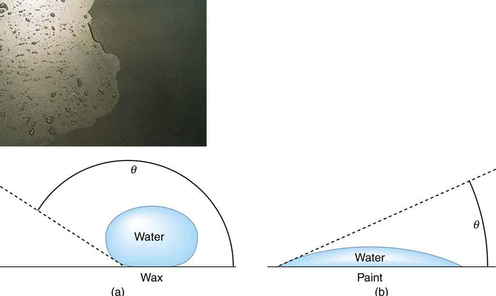
One important phenomenon related to the relative strength of cohesive and adhesive forces iscapillary action—the tendency of a fluid to be raised or suppressed in a narrow tube, orcapillary tube. This action causes blood to be drawn into a small-diameter tube when the tube touches a drop.
The tendency of a fluid to be raised or suppressed in a narrow tube, or capillary tube, is called capillary action.
If a capillary tube is placed vertically into a liquid, as shown inFigure, capillary action will raise or suppress the liquid inside the tube depending on the combination of substances. The actual effect depends on the relative strength of the cohesive and adhesive forces and, thus, the contact angle \(\theta\) given in the table. If \(\theta\) is less that \(90^o\), then the fluid will be raised; if \(\theta\) is greater than \(90^o\), it will be suppressed. Mercury, for example, has a very large surface tension and a large contact angle with glass. When placed in a tube, the surface of a column of mercury curves downward, somewhat like a drop. The curved surface of a fluid in a tube is called ameniscus. The tendency of surface tension is always to reduce the surface area. Surface tension thus flattens the curved liquid surface in a capillary tube. This results in a downward force in mercury and an upward force in water, as seen inFigure.
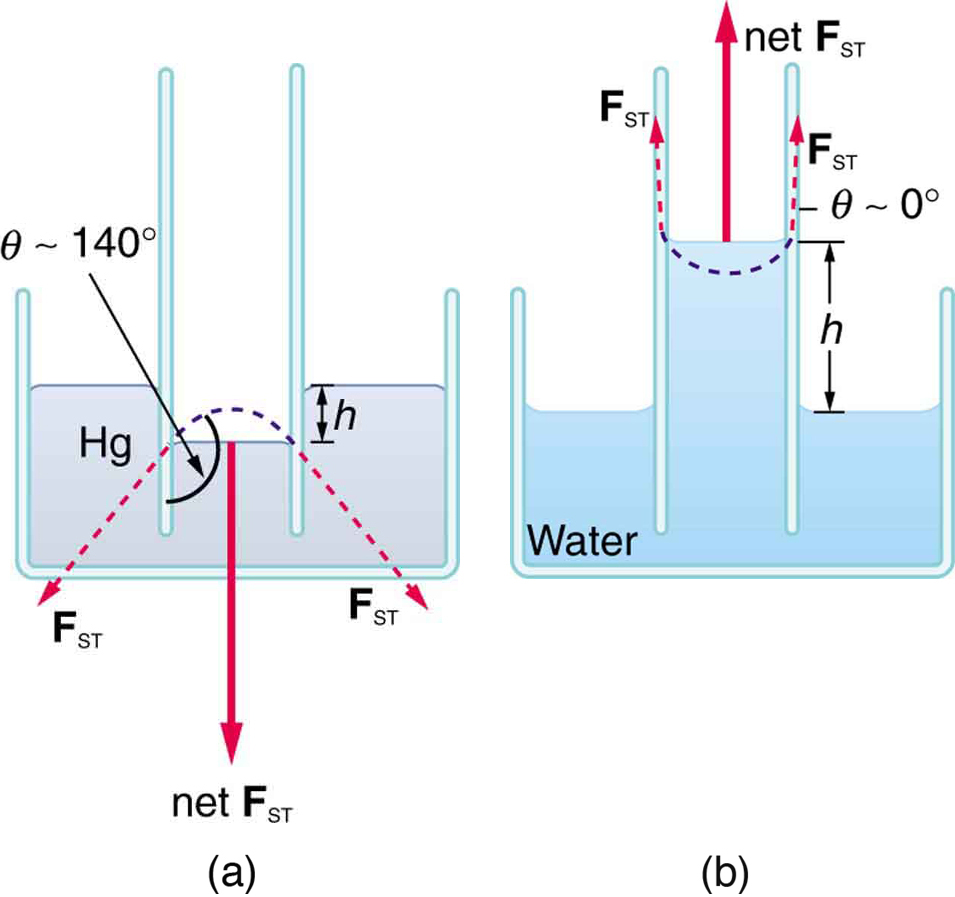
| Interface | Contact angle \(\phi\) |
|---|---|
| Mercury-glass | \(140^o\) |
| Water-glass | \(0^o\) |
| Water-paraffin | \(107^o\) |
| Water-silver | \(90^o\) |
| Organic liquids (most)-glass | \(0^o\) |
| Ethyl alcohol-glass | \(0^o\) |
| Kerosene-glass | \(26^o\) |
Capillary action can move liquids horizontally over very large distances, but the height to which it can raise or suppress a liquid in a tube is limited by its weight. It can be shown that this heigh \(h\) is given by
If we look at the different factors in this expression, we might see how it makes good sense. The height is directly proportional to the surface tension \(\gamma\), which is its direct cause. Furthermore, the height is inversely proportional to tube radius—the smaller the radius , the higher the fluid can be raised, since a smaller tube holds less mass. The height is also inversely proportional to fluid density , since a larger density means a greater mass in the same volume. (SeeFigure.)
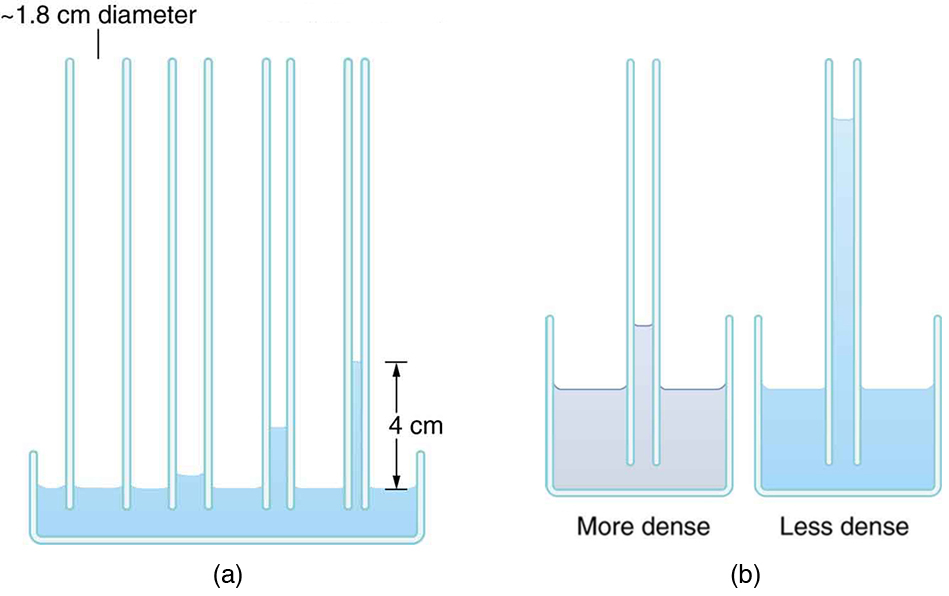
Can capillary action be solely responsible for sap rising in trees? To answer this question, calculate the radius of a capillary tube that would raise sap 100 m to the top of a giant redwood, assuming that sap’s density is \(1050 \, kg/m^3\), its contact angle is zero, and its surface tension is the same as that of water at \(20.0^oC\).
The height to which a liquid will rise as a result of capillary action is given by \(h = \frac{2\gamma \cos \theta}{\rho gr}\), and every quantity is known exceptfor \(r\).
Solving for \(r\) and substituting known values produces
This result is unreasonable. Sap in trees moves through thexylem, which forms tubes with radii as small as \(2.5 \times 10^{-7} \, m.\) This value is about 180 times as large as the radius found necessary here to raise sap \(100 m\). This means that capillary action alone cannot be solely responsible for sap getting to the tops of trees.
Howdoessap get to the tops of tall trees? (Recall that a column of water can only rise to a height of 10 m when there is a vacuum at the top—see[link].) The question has not been completely resolved, but it appears that it is pulled up like a chain held together by cohesive forces. As each molecule of sap enters a leaf and evaporates (a process called transpiration), the entire chain is pulled up a notch. So a negative pressure created by water evaporation must be present to pull the sap up through the xylem vessels. In most situations,fluids can push but can exert only negligible pull, because the cohesive forces seem to be too small to hold the molecules tightly together. But in this case, the cohesive force of water molecules provides a very strong pull.Figureshows one device for studying negative pressure. Some experiments have demonstrated that negative pressures sufficient to pull sap to the tops of the tallest treescanbe achieved.
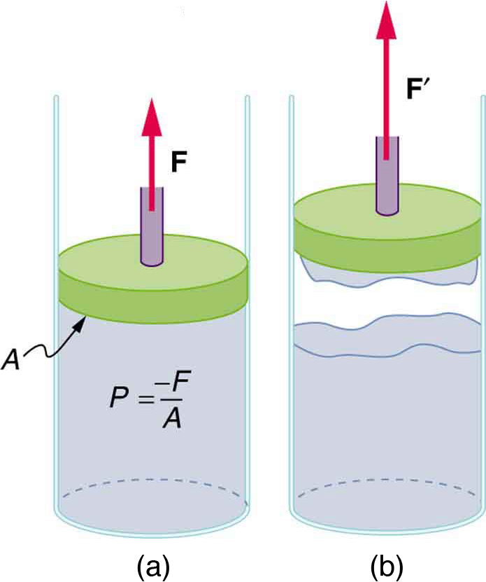
📖 OpenStax College Physics, Section 11.8. openstax.org · CC BY 4.0
- Explain the concept of pressure the in human body.
- Explain systolic and diastolic blood pressures.
- Describe pressures in the eye, lungs, spinal column, bladder, and skeletal system.
📖 OpenStax College Physics, Section 11.9. openstax.org · CC BY 4.0
| Section | Title |
|---|---|
| 11.1 | 11.1: What Is a Fluid? |
| 11.2 | 11.2: Density |
| 11.3 | 11.3: Pressure |
| 11.4 | 11.4: Variation of Pressure with Depth in a Fluid |
| 11.5 | 11.5: Pascal’s Principle |
| 11.6 | 11.6: Gauge Pressure, Absolute Pressure, and Pressure Measurement |
| 11.7 | 11.7: Archimedes’ Principle |
| 11.8 | 11.8: Cohesion and Adhesion in Liquids - Surface Tension and Capillary Action |
| 11.9 | 11.9: Pressures in the Body |